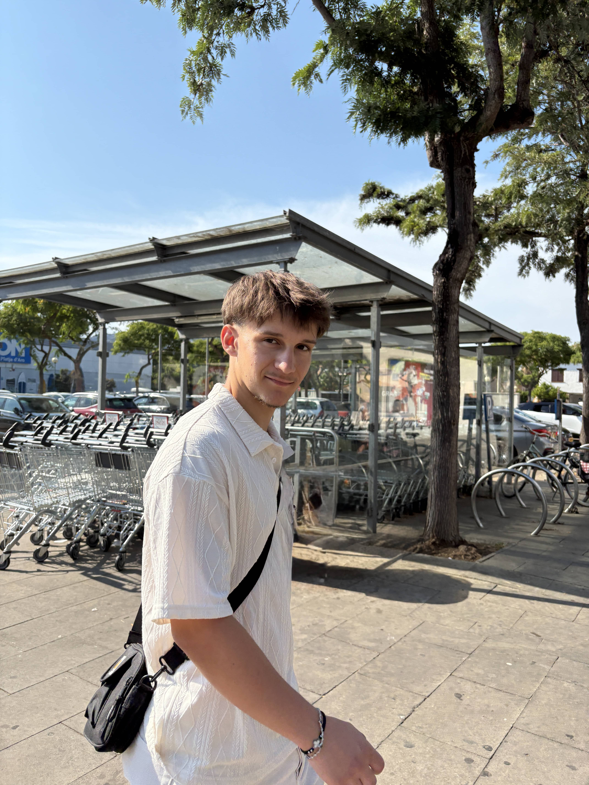

Étudiant BUT Informatique — Montpellier
Kilian Dach, développeur web full-stack.
Je transforme des idées en applications web performantes. Du modèle de données à l'interface, je soigne autant la logique que le design.
- BUT Informatique — parcours RACDV
- Stage DSI — La Poste
- Expérience freelance e-commerce
À propos
Le code au service
des idées.

Ma passion
Ce qui me passionne dans le développement web, c'est de pouvoir répondre à de vrais besoins avec ma créativité. J'aime construire une interface que les utilisateurs apprécient, puis la connecter à une logique robuste et sécurisée.
Mon expérience
J'ai rapidement voulu confronter ma formation à la réalité du terrain : d'abord en freelance sur un site e-commerce, puis en stage à la DSI de La Poste, où j'ai déployé un LLM interne et les outils qui vont avec. Gérer la relation client, respecter les délais et livrer un produit réellement utilisé a confirmé mon choix de carrière.
Ma double casquette
À côté du code, je pratique la photo et la vidéo — y compris au drone. Ça nourrit directement mon travail de développeur : je conçois des interfaces avec un vrai regard de créatif, et je peux livrer un site accompagné de son contenu visuel.
Mon parcours
Formation & expérience
Stage développeur — DSI de La Poste
Déploiement d'un LLM interne (Gemma via vLLM) et des outils qui l'entourent : une interface web type Copilot en Angular, l'anonymisation des documents, l'authentification OIDC du groupe et un custom node n8n. Le tout livré en CI/CD GitLab sur OpenShift — et aujourd'hui utilisé par les équipes de la DSI.
Voir le détail du stageBUT Informatique — parcours RACDV
Le parcours RACDV (Réalisation d'Applications : Conception, Développement, Validation) me forme à la totalité du cycle de vie logiciel. De la conception (UML, bases de données) au développement front-end et back-end, jusqu'à la validation (tests unitaires, tests d'intégration) : j'ai une vision complète et rigoureuse de la création d'applications.
Voir mon portfolio d'apprentissageDéveloppeur web freelance
Conception et développement complet de la boutique en ligne V2C, de l'analyse des besoins jusqu'à la mise en production avec paiement Stripe. Un premier vrai contact avec la relation client, les délais et la responsabilité d'une livraison.
Voir le projet V2C ShopBaccalauréat STI2D — spécialité SIN
Systèmes d'Information et Numérique : première approche de la programmation, de l'électronique embarquée et de la conduite de projets techniques.
Mes réalisations
Quatre projets,
quatre contextes.
Professionnel · IA générative
Déploiement d'un LLM interne à la DSI de La Poste : modèle Gemma servi par vLLM, interface web type Copilot en Angular, anonymisation des documents, authentification OIDC et custom node n8n. Outils aujourd'hui utilisés en interne.
Freelance · E-commerce
Site e-commerce complet pour une marque indépendante de t-shirts : boutique moderne, facile à administrer et optimisée pour la conversion, avec paiement sécurisé Stripe.
Académique · Vote participatif
Application web de vote participatif développée en équipe de 4 avec la méthode agile Scrum. Architecture MVC, base de données SQL et tests unitaires.
Personnel · Application mobile
Application mobile de suivi nutrition et entraînement : journal de repas, scan de codes-barres, programmes sportifs, base locale SQLite et synchronisation Supabase.
Ma boîte à outils
Les technologies que j'utilise
Front-End
Back-End
Données
Mobile
Versionning & CI/CD
Outils & déploiement
Au-delà du code
La création visuelle
Photographie
Automobile, portrait, événementiel, produit et architecture. J'aime capturer des moments et travailler la lumière autant que la composition.
Vidéo
Tournage, montage et colorimétrie, avec un goût prononcé pour les formats courts pensés pour les réseaux sociaux.
Drone & FPV
Drone classique et FPV pour les prises de vue aériennes, et des perspectives qu'on ne peut obtenir autrement.
L'avantage
Développeur et créatif visuel.
Je porte une attention particulière au design des sites que je crée, et je peux proposer le développement web couplé à de la production photo et vidéo. De quoi construire une présence en ligne complète : un site sur mesure et le contenu visuel qui va avec.
Un seul interlocuteur, du code au contenu.
Contact
Un projet ? Parlons-en.
Je suis toujours ouvert pour discuter d'un nouveau projet, d'une opportunité d'alternance ou simplement échanger sur le développement web.
M'envoyer un message